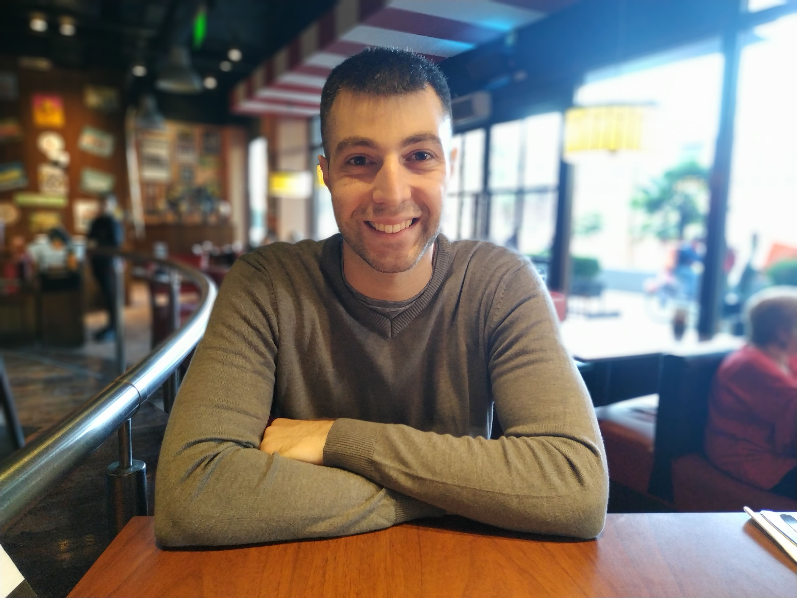

Presentación
Mi nombre es Facundo Tassone y soy un apasionado por la tecnología y la programación.
Actualmente, estudio en la facultad y busco perfeccionarme cada día en el área de desarrollo de software.
Intereses y conocimientos
Disfruto aprender sobre distintos lenguajes de programación, especialmente TypeScript.
Tengo experiencia en desarrollo backend, donde aplico principios SOLID y arquitectura limpia.
Me encanta explorar nuevas herramientas y frameworks para mantenerme al día con las tendencias del mercado.
Habilidades y filosofía de trabajo
Valoro enormemente el trabajo en equipo y la comunicación efectiva.
Considero que la colaboración interdisciplinaria enriquece cualquier proyecto tecnológico.
Busco siempre soluciones escalables y eficientes para resolver problemas complejos.
Pasatiempos y temas de interés
En mi tiempo libre, me dedico a investigar sobre nuevas tecnologías.
También disfruto profundizar en temas como Docker, despliegue en la nube y CI/CD.
Además de programar, de vez en cuando imprimo en 3D.
Motivación y objetivos
Creo que la tecnología debe estar al servicio de las personas y facilitar sus tareas diarias.
Por eso, me motiva diseñar software que mejore la experiencia de los usuarios.
En el futuro, me gustaría trabajar en fintech o consultoría, liderando proyectos de alto impacto.
Mi objetivo es continuar aprendiendo y compartir conocimientos con otros desarrolladores.
Me considero una persona curiosa, proactiva y con ganas de asumir nuevos desafíos.
Entre mis metas está perfeccionar mis habilidades de liderazgo y gestión de equipos.
Estoy convencido de que un buen ambiente de trabajo potencia la creatividad y la innovación.
Apasionarme por lo que hago me impulsa a buscar la excelencia y el crecimiento continuo.
Despedida
Espero que esta presentación sirva para conocer un poco más de mí y mi enfoque profesional.